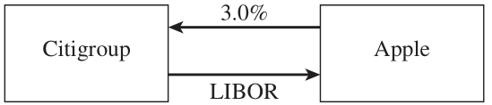
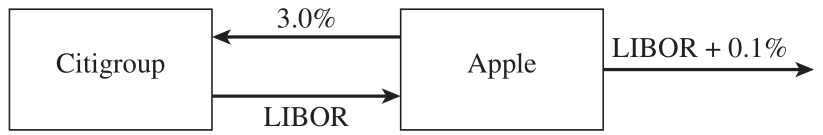
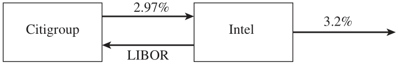
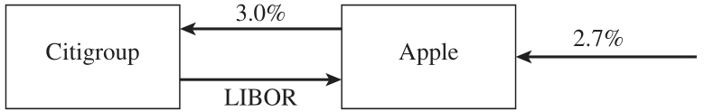
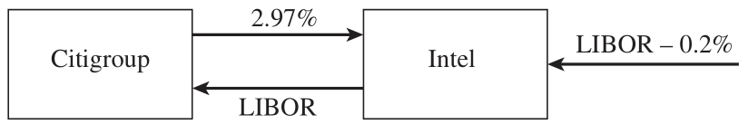
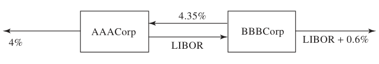
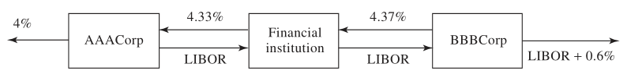
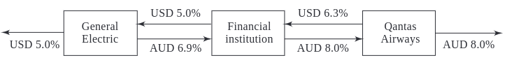

4 Swaps
- HULL, John. Options, futures, and other derivatives. Ninth edition. Harlow: Pearson, 2018. ISBN 978-1-292-21289-0.
- Chapter 7 - Swaps
- PIRIE, Wendy L. Derivatives. Hoboken: Wiley, 2017. CFA institute investment series. ISBN 978-1-119-38181-5.
- Chapter 2 - Basics of Derivative Pricing and Valuation
- Chapter 3 - Pricing and Valuation of Forward Commitments
Learning Outcomes:
- Understand the fundamental principles and nature of swaps, including their purpose and functionality in financial markets.
- Analyze the mechanics and applications of interest rate swaps, identifying the roles of comparative advantage and valuation methods.
- Explore currency swaps, including their types, uses, and the valuation process for fixed-for-fixed currency swaps.
- Examine additional swap arrangements outside of interest rate and currency swaps, recognizing their unique features and applications.
4.1 Nature of Swaps
Definition and Nature: A swap is an OTC contract, inherently subject to default risk due to its bilateral negotiation and customization. It represents a mutual agreement to exchange cash flows at designated times, adhering to agreed-upon rules.
Comparison with Forward Contracts: Unlike forward contracts, which culminate in a single cash flow exchange on a future date, swaps facilitate multiple cash-flow exchanges over time. This difference highlights swaps’ flexibility and applicability in various financial strategies.
Conceptually, a swap can be viewed as a series of forward contracts bundled together. This perspective underscores its utility in hedging and financing operations, where the timing and value of cash flows are critical.
Value Dynamics at Inception: At the initiation of a swap, its market value is zero. This initial neutrality reflects a balance within the swap’s structure, where some forward components might hold positive value, and others, negative. Over time, the value of these components evolves, influenced by market conditions and the underlying assets’ performance.
4.2 Interest Rate Swaps
This section delves into a classic example of a “Plain Vanilla” Interest Rate Swap, illustrating a transaction between two prominent entities: Apple and Citigroup. Over a three-year period, they engage in an exchange that highlights the fundamental mechanics of interest rate swaps.
Transaction Overview: Apple commits to paying Citigroup a fixed interest rate of 3% per annum. These payments occur bi-annually, based on a hypothetical principal amount of $100 million. Conversely, Citigroup is responsible for paying Apple based on the six-month SOFR rate, calculated against the same principal value.
Roles Defined: In this arrangement, Apple assumes the role of the fixed-rate payer, while Citigroup takes on the position of the floating-rate payer.

- Cash Flow Dynamics: The table provided outlines potential outcomes for a modified scenario where the swap duration is two years, retaining the $100 million notional principal. It details the exchange rates, corresponding cash flows, and net outcomes for Apple across several dates. This table exemplifies the variability in net cash flow resulting from fluctuations in the SOFR rate, with Apple’s position oscillating between receiving and paying funds based on these rates.
| Date | SOFR rate (%) | Floating cash flow received ($’000s) | Fixed cash flow paid ($’000s) | Net cash flow ($’000s) |
|---|---|---|---|---|
| June 8, 2022 | 2.20 | 550 | 750 | -200 |
| Sept. 8, 2022 | 2.60 | 650 | 750 | -100 |
| Dec. 8, 2022 | 2.80 | 700 | 750 | -50 |
| Mar. 8, 2023 | 3.10 | 775 | 750 | +25 |
| June 8, 2023 | 3.30 | 825 | 750 | +75 |
| Sept. 8, 2023 | 3.40 | 850 | 750 | +100 |
| Dec. 8, 2023 | 3.60 | 900 | 750 | +150 |
| Mar. 8, 2024 | 3.80 | 950 | 750 | +200 |
Typical Applications of Interest Rate Swaps
Interest rate swaps serve as versatile financial instruments, facilitating strategic adjustments to both liabilities and assets. Entities utilize these swaps to modify their interest rate exposure, transitioning between fixed and floating rates as per their financial strategies or market outlook.
- Apple Transforms a Liability from Floating to Fixed:

- Intel Transforms a Liability from Fixed to Floating:

- Apple Transforms an Asset from Fixed to Floating:

- Intel Transforms an Asset from Floating to Fixed:

Insights from a Swap Market Maker (Citigroup)
- Market Quotations: This section offers a glimpse into the swap market’s dynamics, presenting Citigroup’s bid and offer rates for fixed-rate swaps with varying maturities. The bid-offer spread, typically ranging from three to four basis points, reflects the market maker’s pricing strategy and the liquidity of swap contracts across different terms.
| Maturity (years) | Bid | Ask | Swap rate |
|---|---|---|---|
| 2 | 2.97 | 3.00 | 2.985 |
| 3 | 3.05 | 3.08 | 3.065 |
| 4 | 3.15 | 3.19 | 3.170 |
| 5 | 3.26 | 3.30 | 3.280 |
| 7 | 3.40 | 3.44 | 3.420 |
| 10 | 3.48 | 3.52 | 3.500 |
4.3 The Comparative-Advantage Argument
The comparative-advantage argument forms a foundational concept in the realm of financial swaps, particularly illuminating why and how companies engage in interest rate swaps to optimize their borrowing costs. At the heart of this argument is the strategic alignment of borrowing preferences with market conditions to leverage comparative advantages.
The Case Study: AAACorp and BBBCorp
Consider two hypothetical entities: AAACorp, which prefers to borrow using floating interest rates, and BBBCorp, which opts for fixed-rate borrowing. Their respective borrowing rates are tabled below, illustrating the differential costs of borrowing in fixed versus floating rate markets:
| Entity | Fixed Rate | Floating Rate |
|---|---|---|
| AAACorp | 4.0% | Floating - 0.1% |
| BBBCorp | 5.2% | Floating + 0.6% |
- Direct Swap: Initially, let’s explore a scenario where AAACorp and BBBCorp engage in a direct swap agreement. This entails AAACorp borrowing at its preferred floating rate and BBBCorp at its preferred fixed rate, followed by an exchange of their respective financial obligations. The direct swap mechanism is visually represented as follows:

- Indirect Swap via Financial Institution: In a more complex structure, a financial institution plays an intermediary role, facilitating the swap between AAACorp and BBBCorp. This arrangement often introduces efficiencies and reduces the direct negotiation complexities between the companies:

Critical Analysis of the Comparative Advantage Argument
While the comparative-advantage argument underpins the financial logic for interest rate swaps, it is not without criticism, particularly when scrutinizing the underlying rates’ term structure:
Rate Term Disparity: The fixed rates quoted (4.0% for AAACorp and 5.2% for BBBCorp) pertain to 5-year borrowing, whereas the floating rates (Floating - 0.1% for AAACorp and Floating + 0.6% for BBBCorp) are based on 6-month terms. This discrepancy in rate terms introduces complexities in directly comparing and assessing the advantages of one type of rate over the other.
Future Rate Uncertainty for BBBCorp: BBBCorp’s future borrowing costs, especially its fixed rate, are contingent upon the spread above the floating rate at which it borrows subsequently. This introduces an element of uncertainty and risk, particularly in fluctuating interest rate environments.
4.4 Valuation of Interest Rate Swaps
Interest rate swaps are sophisticated financial instruments utilized to manage interest rate exposure. Initially, their valuation is approximately zero, reflecting an equitable initiation of terms. As market conditions evolve, their value can fluctuate significantly. This dynamic nature requires a detailed understanding of valuation techniques, notably through the lens of Forward Rate Agreements (FRAs).
Valuation Framework
The valuation process encompasses several steps, designed to ascertain the present value of the swap’s anticipated cash flows:
Floating Forward Rates Calculation: This initial step involves projecting future interest rates based on current market data, which will determine the floating rate payments of the swap.
Swap Cash Flows Determination: By applying the calculated forward rates, one can estimate the future cash flows for both fixed and floating legs of the swap.
Cash Flow Discounting: The future cash flows are then discounted back to their present value using risk-free rates, typically Overnight Indexed Swap (OIS) rates, to reflect the time value of money and credit risk.
Swap Agreement Overview
- Nature of Swap: This transaction entails an exchange where one party pays a fixed annual rate of 3% and receives the SOFR semi-annually on a principal of $100 million.
- Remaining Duration: The swap has a remaining term of 1.2 years with scheduled exchanges occurring at 0.2, 0.7, and 1.2 years.
- Risk-Free Rates: The Overnight Indexed Swap (OIS) zero rates applicable for maturities of 3, 9, and 15 months are respectively set at 2.8%, 3.2%, and 3.4%.
- Historical SOFR Rate: The SOFR rate for the upcoming exchange in 3 months has been previously fixed at 2.9%.
- Forward SOFR Rates: Projected forward SOFR rates for exchanges at 0.2, 0.7, and 1.2 years, considering both continuous and semi-annual compounding, are as follows:
- Continuous compounding rates: 2.50%, 3.36%, 3.68%
- Semi-annual compounding rates: 2.516%, 3.388%, 3.714%
Cash Flow Valuation
The valuation process meticulously calculates the fixed and floating cash flows, their net impact, and their present values as detailed in the table below. These calculations employ the forward SOFR rates and discount them using the corresponding OIS rates to ascertain the swap’s current value.
| Time (years) | Fixed Cash Flow (USD million) | Floating Cash Flow (USD million) | Net Cash Flow (USD million) | Discount Factor | Present Value of Net Cash Flow (USD million) |
|---|---|---|---|---|---|
| 0.2 | -1.500 | +1.258 | -0.242 | 0.9944 | -0.241 |
| 0.7 | -1.500 | +1.694 | +0.194 | 0.9778 | +0.190 |
| 1.2 | -1.500 | +1.857 | +0.357 | 0.9600 | +0.343 |
| Total | +0.292 |
Fixed Cash Flow Calculation: At 0.7 years, the fixed payment is calculated as \(0.5 \times 0.03 \times 100 = -\$1.5 \text{million}\).
Floating Cash Flow Projection: The floating cash flow, based on the semi-annual compounding forward rate for 0.7 years (3.388%), is \(0.5 \times 0.03388 \times 100 = \$1.694 \text{million}\).
Net Cash Flow and Present Value: The resulting net cash flow of $0.194 million is then discounted using the exponential factor derived from the OIS rate for 0.7 years (\(e^{-0.032 \times 0.7} = 0.9778\)), leading to a present value of $0.190 million.
The swap’s value, a summation of the present values of net cash flows across all time points, is calculated to be $0.292 million.
It’s crucial to acknowledge the approximation inherent in these calculations due to the exclusion of factors such as holiday calendars and day count conventions, which can affect precise cash flow timings and amounts.
4.5 Currency Swaps
Currency swaps are intricate financial instruments that facilitate the exchange of principal and interest payments in different currencies between two parties. A fixed-for-fixed currency swap involves exchanging fixed interest rate payments in one currency for fixed interest rate payments in another currency, alongside the exchange of principal amounts at both the start and end of the agreement.
Case Study: British Petroleum and Barclays Swap Agreement
- Agreement Overview: British Petroleum enters into a five-year currency swap with Barclays, where British Petroleum agrees to pay a fixed interest rate of 3% in U.S. dollars and receives a fixed interest rate of 4% in British pounds sterling.
- Principal Exchange: The principal amounts involved are USD 15 million and GBP 10 million, exchanged at the inception and conclusion of the swap term.
- Interest Payment Schedule: Interest is paid annually, reflecting the fixed rates agreed upon in both currencies.
The table below outlines the yearly cash flows resulting from this swap, highlighting the exchange of principal and interest payments between British Petroleum and Barclays:
| Date | Dollar Cash Flow (millions) | Sterling Cash Flow (millions) |
|---|---|---|
| February 1, 2022 | +15.00 | -10.00 |
| February 1, 2023 | -0.45 | +0.40 |
| February 1, 2024 | -0.45 | +0.40 |
| February 1, 2025 | -0.45 | +0.40 |
| February 1, 2026 | -0.45 | +0.40 |
| February 1, 2027 | -15.45 | +10.40 |
Typical Applications of Currency Swaps
Currency swaps serve versatile functions in global finance, including but not limited to:
Liability Management: They enable entities to convert liabilities from one currency to another, aligning with their currency exposure preferences or expectations.
Investment Optimization: Similarly, currency swaps can convert investments from one currency to another, facilitating global investment strategies that match investors’ risk and return profiles.
Comparative Advantage in Currency Swaps
Comparative advantage in currency swaps can emerge from various factors, including the differential impact of taxation on borrowing costs across different currencies.
Scenario: General Electric seeks to borrow in Australian dollars (AUD), while Qantas Airways aims to borrow in U.S. dollars (USD).
Borrowing Costs: After tax adjustments, the borrowing costs for each entity in their non-preferred currencies reveal a potential for mutual benefit through a currency swap.
| USD | AUD | |
|---|---|---|
| General Electric | 5.0% | 7.6% |
| Qantas Airways | 7.0% | 8.0% |

4.6 Valuation of Fixed-for-Fixed Currency Swaps
Fixed-for-fixed currency swaps are complex financial instruments that involve exchanging fixed interest payments in two different currencies. The essence of valuing these swaps lies in understanding that each payment exchange represents a forward contract on currencies. The valuation process hinges on the assumption that forward exchange rates, as determined by the market’s expectations of future currency values, will be realized.
The valuation of a fixed-for-fixed currency swap can be methodically approached by considering the swap as a series of forward foreign exchange contracts. Each of these contracts can be valued based on the premise that the forward exchange rates, agreed upon at the initiation of the contract, accurately predict future exchange rates.
Consider a swap agreement involving the exchange of interest payments in Japanese yen and U.S. dollars, with the following parameters:
- Interest Rates: Japanese yen interest rates are fixed at 1.5% per annum with continuous compounding, while U.S. dollar interest rates are fixed at 2.5% per annum with continuous compounding.
- Swap Payments: Annually, 3% interest is received in yen, and 4% interest is paid in dollars.
- Principal Amounts: The principal amounts involved are $10 million and 1,200 million yen.
- Swap Duration: The swap has a remaining life of 3 years.
- Current Exchange Rate: The spot exchange rate is 110 yen per dollar.
| Time (years) | Dollar Cash Flow (million) | Yen Cash Flow (million) | Forward Exchange Rate | Dollar Value of Yen Cash Flow (million) | Net Cash Flow (million) | Present Value (million) |
|---|---|---|---|---|---|---|
| 1 | -0.4 | +36 | 0.009182 | 0.3306 | -0.0694 | -0.0677 |
| 2 | -0.4 | +36 | 0.009275 | 0.3339 | -0.0661 | -0.0629 |
| 3 | -10.4 | +1236 | 0.009368 | 11.5786 | +1.1786 | +1.0934 |
| Total | +0.9629 |
- Annual Payments: The institution commits to an annual payment of $0.4 million in U.S. dollars (calculated as \(0.04 \times 10\)) while receiving 36 million yen (calculated as \(1,200 \times 0.03\)).
- Principal Exchange: At the end of the third year, a principal payment of $10 million is made in dollars, and a reciprocal receipt of 1,200 million yen is recorded.
- Spot Exchange Rate: The initial exchange rate stands at \(1/110 = 0.009091\) dollars per yen, serving as the basis for forward rate calculations.
The valuation intricately relies on the forward exchange rates, derived from the differential in continuous compounding interest rates between the two currencies:
- Interest Rates: The domestic (USD) and foreign (JPY) interest rates are set at 2.5% (\(r\)) and 1.5% (\(r_f\)), respectively.
- Forward Rate for Year 1: The one-year forward exchange rate is calculated as \(0.009091 \times e^{(0.025-0.015) \times 1} = 0.009182\), reflecting the expected exchange rate in one year based on interest rate differentials.
- Subsequent Years’ Rates: Forward rates for years two and three are similarly derived, adjusting for the respective time periods.
The forward exchange rates are pivotal in valuing the yen-denominated cash flows in dollars, subsequently determining the net cash flow and its present value:
- Year 1 Valuation: The yen cash flow’s conversion at the one-year forward rate yields \(36 \times 0.009182 = 0.3306\) million dollars. The net cash flow, after accounting for the dollar payment, stands at \(0.3306 - 0.4 = -0.0694\) million dollars.
- Present Value Calculation: The present value of the year 1 net cash flow is calculated as \(-0.0694 \times e^{-0.025 \times 1} = -0.0677\) million dollars, applying the domestic interest rate for discounting.
- Similar methodologies are applied for the cash flows in years two and three, ensuring that each forward contract’s value is accurately captured.
The aggregate value of the forward contracts, representing the net present value of all future cash flows under the swap agreement, culminates in a total of \(\$0.9629\) million. This valuation encapsulates the financial institution’s gain from the swap, assuming that the calculated forward rates are realized as projected.
4.7 Other Currency Swaps
Fixed-for-Floating Currency Swaps
A fixed-for-floating currency swap is a hybrid financial instrument that combines elements of a fixed-for-fixed currency swap with a fixed-for-floating interest rate swap. This type of swap involves the exchange of fixed interest payments in one currency for floating interest payments in another currency.
Consider an agreement where a party pays a floating interest rate on a GBP 7 million principal and receives a fixed 3% interest rate on a USD 10 million principal, with semiannual payments over a period of 10 years. This can be further dissected into:
A currency swap component where 3% fixed interest on a USD 10 million principal is received in exchange for paying a 4% fixed interest on a GBP 7 million principal.
An interest rate swap component where a 4% fixed interest is received, and a sterling floating interest rate is paid on a notional GBP 7 million principal.
Floating-for-Floating Currency Swaps
Floating-for-floating currency swaps involve the exchange of floating interest payments in two different currencies. This type of swap is essentially a combination of a fixed-for-fixed currency swap and two floating interest rate swaps.
An example of this swap could involve exchanging sterling floating interest payments on a GBP 7 million principal for dollar floating interest payments on a USD 10 million principal. This arrangement can be broken down into:
A base swap where 3% fixed interest on a USD 10 million principal is exchanged for 4% fixed interest on a GBP 7 million principal.
An interest rate swap where 4% fixed interest is exchanged for sterling floating interest on a GBP 7 million principal.
An additional interest rate swap where 3% fixed interest is paid in exchange for receiving USD floating interest on a USD 10 million principal.
4.8 Other Types of Swaps
Beyond the conventional currency and interest rate swaps, the derivatives market offers a variety of specialized swaps designed to meet diverse financial needs and strategies. These include:
Amortizing/Step-Up Swaps: These involve gradually increasing or decreasing notional principal amounts, typically to match the amortization of an underlying asset or liability.
Compounding Swap: Involves the reinvestment of periodic interest payments to compound over the life of the swap.
Constant Maturity Swap (CMS): The swap’s interest rate is reset periodically based on the rate of a constant maturity instrument, such as a 10-year Treasury note.
LIBOR-in-Arrears Swap: The interest rate is determined at the end of the payment period rather than the beginning, introducing additional risk and potential reward.
Accrual Swap: Interest accruals are contingent on the performance of a benchmark rate or index, potentially pausing under certain conditions.
Equity Swap: Involves the exchange of the returns of an equity asset with those of another financial instrument, which can be fixed or floating rate interest.
Cross Currency Interest Rate Swap: A variant of currency swaps where both legs of the swap are in different currencies and at least one leg is a floating interest rate.
Floating-for-Floating Currency Swap: Both parties exchange floating interest rate payments in different currencies.
Diff Swap: An interest rate differential swap, where payments are based on the difference between two reference rates.
Commodity Swap: Involves exchanging a fixed price for a commodity for its floating market price over the term of the swap.
Variance Swap: A forward contract on future volatility; the payments are based on the variance of a specified underlying asset.
The diversity of swap instruments in financial markets allows for tailored risk management and investment strategies. Whether through modifying payment structures, leveraging different types of rates (fixed, floating, or equity-based), or engaging in swaps based on commodities or variances, these instruments offer significant flexibility and potential for hedging, speculation, or arbitrage. Understanding the nuances and applications of each type is essential for effective financial management and strategy development.
4.9 Practice Questions and Problems
The Basic Usage of Swaps in Risk Management
1) A bank finds that its assets are not matched with its liabilities. It is taking floating-rate deposits and making fixed-rate loans. How can swaps be used to offset the risk?
2) Explain the difference between the credit risk and the market risk in a financial contract.
3) Explain why a bank is subject to credit risk when it enters into two offsetting swap contracts.
4) Why is the expected loss from a default on a swap less than the expected loss from the default on a loan to the same counterparty with the same principal?
Comparative Advantage and Swap Structuring
5) A corporate treasurer tells you that he has just negotiated a five-year loan at a competitive fixed rate of interest of 5.2%. The treasurer explains that he achieved the 5.2% rate by borrowing at six-month LIBOR plus 150 basis points and swapping LIBOR for 3.7%. He goes on to say that this was possible because his company has a comparative advantage in the floating-rate market. What has the treasurer overlooked?
6) Companies A and B have been offered the following rates per annum on a $20 million five-year loan:
| Fixed Rate | Floating Rate | |
|---|---|---|
| Company A | 5.0% | Floating + 0.1% |
| Company B | 6.4% | Floating + 0.6% |
Company A requires a floating-rate loan; company B requires a fixed-rate loan. Design a swap that will net a bank, acting as intermediary, 0.1% per annum and that will appear equally attractive to both companies.
7) Company X wishes to borrow U.S. dollars at a fixed rate of interest. Company Y wishes to borrow Japanese yen at a fixed rate of interest. The amounts required by the two companies are roughly the same at the current exchange rate. The companies have been quoted the following interest rates, which have been adjusted for the impact of taxes:
| Yen | Dollars | |
|---|---|---|
| Company X | 5.0% | 9.6% |
| Company Y | 6.5% | 10.0% |
Design a swap that will net a bank, acting as intermediary, 50 basis points per annum. Make the swap equally attractive to the two companies and ensure that all foreign exchange risk is assumed by the bank.
8) Companies X and Y have been offered the following rates per annum on a $5 million 10-year investment:
| Fixed Rate | Floating Rate | |
|---|---|---|
| Company X | 8.0% | Floating |
| Company Y | 8.8% | Floating |
Company X requires a fixed-rate investment; company Y requires a floating-rate investment. Design a swap that will net a bank, acting as intermediary, 0.2% per annum and will appear equally attractive to X and Y.
Swap Valuation
9) A $100 million interest rate swap has a remaining life of 10 months. Under the terms of the swap, six-month LIBOR is exchanged for 7% per annum (compounded semiannually). The average of the bid-offer rate being exchanged for six-month LIBOR in swaps of all maturities is currently 5% per annum with continuous compounding (5.063% with semi-annual compounding). The six-month LIBOR rate was 4.6% per annum two months ago. What is the current value of the swap to the party paying floating? What is its value to the party paying fixed?
10) A currency swap has a remaining life of 15 months. It involves exchanging interest at 10% on 20 million GBP for interest at 6% on 30 million USD once a year. The term structure of interest rates in both the United Kingdom and the United States is currently flat, and if the swap were negotiated today the interest rates exchanged would be 4% in dollars and 7% in sterling. All interest rates are quoted with annual compounding (the continuously compounded interest rates in sterling and dollars are 6.766% per annum and 3.922% per annum). The current exchange rate (dollars per pound sterling) is 1.5500. What is the value of the swap to the party paying sterling? What is the value of the swap to the party paying dollars?